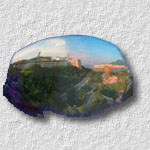

|  |
A System for Real-Time Panorama Generation and Display in Tele-immersive Applications
,
,
and
, |
Abstract
-
- Wide field-of-view is necessary for many industrial applications, such as air traffic control, large vehicle driving and navigation. Unfortunately, the supporting structure/frame in most systems usually blocks part of the view, results in `blind spot'' and raises the risk to the pilot. In this paper, we introduce a video-based tele-immersive system, called the Immersive Cockpit. It captures live videos from the working site and recreates an immersive environment at the remote site where the pilot situates. It immerses the pilot at the remote site with a panoramic view of the environment, hence improves interactivity and safety. The design goals of our system are real-time, live, low-cost and scalable. We stitch multiple video streams captured from ordinary CCD cameras to generate a panoramic video. To avoid being blocked by the supporting frame, we allow a flexible placement of cameras. This approach trades the accuracy of the generated panoramic image for a larger field-of-view. To reduce the computation, parameters for stitching are determined once during the system initialization. The panoramic video is presented on an immersive display which covers the field-of-view of the viewer. We discuss how to correctly present the panoramic video on this non-planar immersive display screen by sweet spot relocation. We also present the result and the performance evaluation of the system.
Download Paper
- Acrobat:
cockpit.pdf (size: 14MB)
Movies
The following movies demonstrate the motivation, setup, operation and result of the Immersive Cockpit.|
|
Motivation: Our view is usually blocked by the supporting structure. This
motivates us to develop a wide field-of-view tele-immserive system, the
Immersive Cockpit. (Size: 1.46MB)
| ||
|
Setup: In our current implementation, we use 8 cameras (divided
into 2 groups) to acquire live videos. A video quad merger combines 4
video streams from the cameras to form a single 4-view stream. (Size:
1.02MB)
| ||
|
Setup: In order to minimize the occlusion due to the supporting frames,
cameras are placed in a flexible manner. This video sequence shows the camera
placement for our outdoor scene capture.
(Size: 1.59MB)
| ||
|
Operation: Separated video streams are then combined to form a
panoramic video by first identifying the correspondences. Screenshot
from each video stream are used for stitching. Users roughly identify
the correspondences and the system refines them for panoramic video
stitching.
(Size: 1.46MB)
| ||
|
Outdoor Result: The live panoramic video stream is displayed on a
hemispherical display, the VisionStation. The large field of view
provides the immersiveness to the user. (Size: 1.59MB)
| ||
|
|
Outdoor Result: In this demo video, the outdoor environment of
our engineering building is captured and stitched to form a panoramic
video stream which is ready to display on the VisionStation. In order
to correctly display on the hemispherical screen, the stitched panorama is
pre-warped before projecting it on the hemispherical screen. The pre-warped
panoramic video look distorted when it is shown on a flat panel. Note that the video is life as
car movement is captured.
(Size: 1.47MB)
| ||
|
Outdoor Result: By warping the triangular mesh, we can perform
rotation on the spherical display. Again, when it is displayed on a flat
panel, the panoramic video is distorted.
(Size: 1.46MB)
| ||
|
Dynamic Camera (Corridor): The left result is captured with the
dynamic camera cluster. The capture system moves along the corridor on the
10/F of our engineering building.
(Size: 1.58MB)
| ||
|
Dynamic Camera (Cafeteria): Another dynamic result: Cafeteria. This
time the moving direction is orthogonal to the "main" camera viewing
direction. (Size: 1.46MB)
|